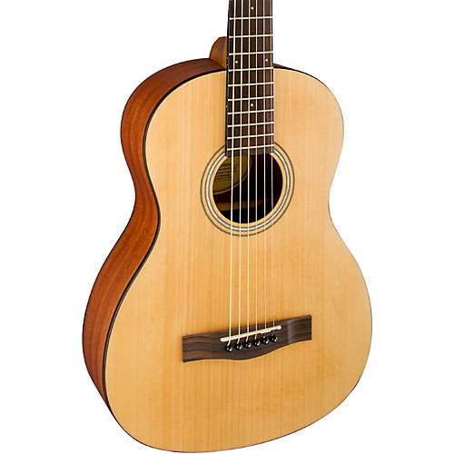

Fender CD-60
Fender CD-60 Specifications:
o Series: Classic Design Series
o Body Style: Fender Style Dreadnought
o Finish: Gloss (Polyurethane)
o Top: Laminated Spruce
o Back and Sides: Laminated Mahogany
o Neck: Nato
o Fingerboard: Sonokeling
o No. of Frets: 20
o Bridge: Sonokeling with Urea Compensated Saddle
o Machine Heads: Chrome (Die-Cast)
o Scale Length: 25.3" (643mm)
o Body Depth: 3.94", 100mm (Front) to 4.92" 125mm (Rear)
o Width at Nut: 1.69" (43mm)
o Width at Heel: 2.24" (57mm)
o Pickguard: Black
o Fingerboard Inlays: White Dots
o Logo: Gold Silkscreen
o Soundhole Rosette: Multi-ABS
o Body and Neck Binding: Black
o Bridge and Endpins: Black
o Strings: Fender 60L Phosphor Bronze, p/n 0730060003, Gauges .012 to .053.